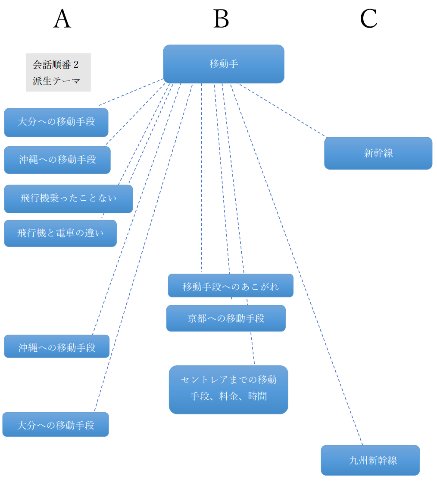

分析内容
言語特徴の分析では、書き起こしスクリプトをもとにテーマやレーマの推移を分析し、テーマ展開や各話者が果たす役割についての考察を試みた。
分析結果にも示す通り、図を用いて話者を区別したうえで、テーマの展開を分析した。
分析結果
話者を区別した、テーマ展開の分析結果
言語特徴からの考察
分析結果を受けて
我々は、分析結果を受けて、"異種テーマの発話交換パターン"から"派生テーマの発話交換パターン"へ移行する会話になっていると考えた。
また、話者Aの発話量は話者B,Cに比べて群を抜いて多いという大きな特徴も見受られた。
原因の考察
我々の会話が"異種テーマの発話交換パターン"から"派生テーマの発話交換パターン"へ移行する会話になったのには、複数の理由があると考えられる。
1つ目の理由として、異種テーマの発話交換パターンになった理由を挙げたい。
我々はメンバー同士が大まかなテーマしか決めずに会話を始めたので、深く掘り下げるテーマを探るために色々なテーマで
話を進めたのが大きな理由であると考えた。その結果として移動手段と修学旅行の会話を深く掘り下げることをが暗黙の了解になり、
そこから派生テーマ展開の発話交換パターンへと移行したと考えられる。
次に派生テーマの発話交換パターンになった理由について考える。
1つ目に考えられる理由は、今回の会話テーマが出身地についてだった点である。様々な都道府県から学生が集まっているこの大学では、出身地についての会話内容がある程度形式化されていると考えられる。 修学旅行の行先や給食、その土地独自の言葉などである。加えて、今回は話者Aの出身地が京都だったことでより形式化の影響を大きく受け、大きなテーマとして修学旅行を扱う流れになったものと考えられる。
2つ目に考えられる理由は、各話者の役割が明確であったことである。書き起こしスクリプトや上記の分析結果を見てわかる通り、今回の会話は話者Aが話者B,Cに話を振る形式で進められている。 したがって、自然とテーマ展開をつかさどるのは話者Aの役割になり、1人がテーマ展開をつかさどることできれいに構造化された(派生テーマの発話交換パターン)になったと考えられる。